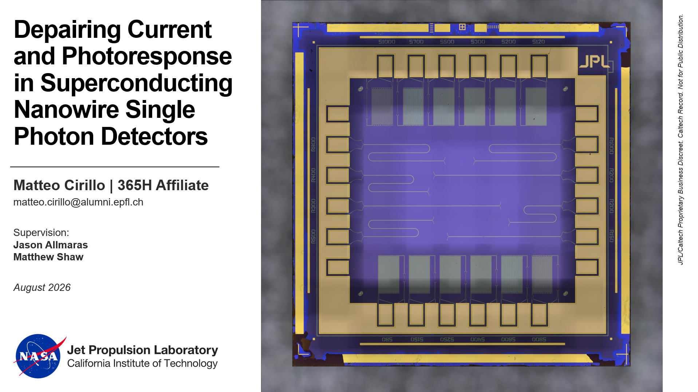
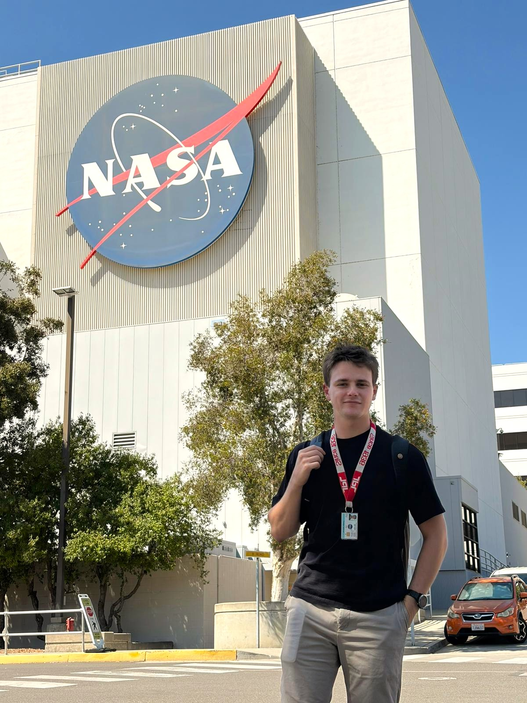
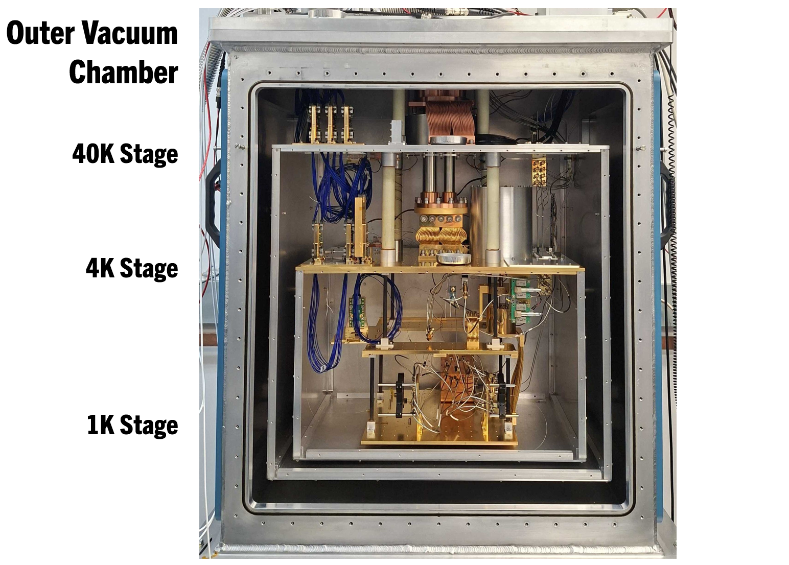

NASA - Jet Propulsion Laboratory
Systematic Study of Depairing Current and Photoresponse in SNSPDs
Note: This project page is intentionally incomplete. Details are momentarily withheld while the main results are prepared for peer-reviewed publication.



Context
Superconducting nanowire single-photon detectors are highly sensitive devices for counting individual photons, with applications ranging from deep-space optical links to quantum information systems. Their performance depends on the interaction between the superconducting material, nanowire geometry, bias current, and the energy of an absorbed photon.
This thesis addressed the need for systematic measurements that connect SNSPD photoresponse to the device's intrinsic depairing current, providing a more consistent basis for modeling detector physics and improving future device designs.
What I worked on
I designed and tested SNSPD devices across a range of geometries, materials, and illumination conditions. The experimental work included superconducting thin-film platforms such as WSi, NbTiN, and MgB2, together with device fabrication, packaging, cooldowns, and optoelectronic characterization.
I performed systematic depairing-current and photoresponse measurements while developing robust control and analysis workflows for the experimental setup. I later investigated how the measurements could be compared with existing theoretical descriptions of SNSPD photon detection, and developed a first-of-its-kind empirical model for predicting photoresponse based on design parameters.
Outcomes
A central outcome of the project was a predictive design tool for estimating SNSPD photoresponse from device and material parameters. The tool is intended to support the design of future detectors while helping bridge empirical measurements and theoretical models.
The detailed findings of the thesis are not presented here because the main results are currently pending publication. Following my thesis defense in July, I was invited to remain at NASA JPL to continue the work and prepare the findings for submission to a peer-reviewed journal.